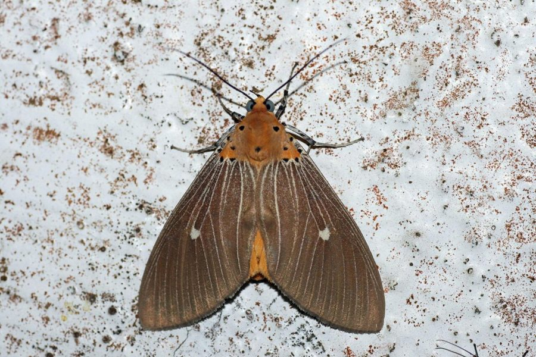

ट्रॉपिकल टाइगर मॉथTropical Tiger Moth
Asota caricae · Erebidae · INS-0159

- Scientific name वैज्ञानिक नाम
- Asota caricae (Stoll, 1790)
- Family कुल
- Erebidae
- Hindi हिंदी
- ट्रॉपिकल टाइगर मॉथ
- Local names स्थानीय नाम
- tropical tiger moth, moth
- Status here यहाँ की स्थिति
- native
- Movement आवागमन
- Resident, here all year
- Known from कहाँ दर्ज
- Others have published records from the Basti–Ayodhya districts बस्ती–अयोध्या के ज़िलों से दूसरों के प्रकाशित अभिलेख
- IUCN IUCN
- not evaluated
- Review समीक्षा
- audited and independently read
When to look कब देखें
Present all year. साल भर मौजूद।
Uses and possibilities उपयोग और संभावनाएँ
Drawn from the documented uses in the profile below, where each is labelled traditional, current or a research lead. All uses →
ट्रॉपिकल टाइगर मॉथ / Tropical Tiger Moth
Asota caricae (Stoll, 1790) — Erebidae
ट्रॉपिकल टाइगर मॉथ — यह एक छोटी, सुंदर पतंगा है जिसके पंखों पर लाल या नारंगी पट्टियाँ और सफ़ेद धब्बे होते हैं, जो इसे बाघ जैसी दिखती है। शरीर काला होता है। कैटरपिलर बहुत सुंदर, चमकीला, काला-नारंगी या पीला होता है, पूरा शरीर छोटी-छोटी बालों से भरा होता है। यह पपीते, दूधी बेल, और दूसरे पौधों की पत्तियों को खाता है। एक बहुत ही अलग दिखने वाली, रंगीन पतंगा है।
Quick Identification त्वरित पहचान
| Feature | Description |
|---|---|
| Size | Small moth; wingspan 30–38 mm |
| Colour | Black or dark brown base; hindwings bright red, orange, or yellow |
| Forewing | Black or dark grey with white or pale spots; may have reddish tones |
| Hindwing | Bright red, orange, or yellow; contrasting with dark forewing |
| Body | Black with bright markings; warning coloration |
| Larva | Black with yellow or orange bands; covered with tufts of hair; warning coloration |
Field tip: A small, striking moth with bright red or orange hindwings contrasting with dark forewings, with white spots. Look for the equally striking caterpillar with bright warning coloration (black with yellow or orange bands) on papaya, milkweed, and related plants.
हिंदी — कैसे पहचानें: छोटी, सुंदर पतंगा। पिछले पंख लाल या नारंगी, आगे के पंख काले सफ़ेद धब्बों के साथ। कैटरपिलर बहुत रंगीन, काला-नारंगी, बालों से भरा।
Morphology आकारिकी
Biometrics (typical measurements):
| Measurement | Range |
|---|---|
| Wingspan | 30–38 mm |
| Body length | 10–12 mm |
| Forewing length | 13–16 mm |
Adult description: A small, strikingly coloured moth. Forewings are black or dark grey with white or pale spots scattered across the surface. Hindwings are bright red, orange, or yellow, contrasting dramatically with the dark forewings. The body is black with red or orange markings, particularly along the thorax and abdomen. This striking coloration is aposematic (warning coloration), indicating that the moth is unpalatable or toxic.
Larval Stage
Caterpillar: Extremely striking, with bright warning coloration: black base colour with broad bands of bright yellow or orange. The entire body is covered with tufts or pencils of hair arising from prominent tubercles (bumps), giving it a bristly appearance. The larva reaches 20–25 mm in length. This striking appearance advertises that the caterpillar is toxic or distasteful to predators. The toxicity is sequestered from the host plant.
Life Cycle / Phenology जीवन चक्र
| Stage / Month | Event |
|---|---|
| Egg | Laid on host plant leaf; hatches in 3–5 days |
| Larva (instar 1–4) | 2–3 weeks; feeds on host plant leaves |
| Prepupa | 1–2 days |
| Pupa | Suspended from plant or leaves; brown pupa; 7–10 days |
| Adult | Emerges; lifespan 2–3 weeks; multiple generations per year |
| Warm season | Continuous generations from April to November |
हिंदी: कैटरपिलर 2–3 हफ़्तों में बड़ा होता है। गर्मी में कई पीढ़ियाँ।
Host Plants or Prey आहार
Larval hosts:
- Papaya (Carica papaya)
- Figs (Ficus spp.)
- Milkweed (Asclepias spp.)
- Rubber plant (Hevea brasiliensis)
- Related Apocynaceae and Moraceae species
Food preference: Primarily a generalist on milky-sapped plants; prefers young leaves.
Predators / Natural Enemies शत्रु
- Limited predation: Warning coloration and toxicity provide substantial protection; few natural predators.
- Parasitoid wasps: Despite defenses, some parasitoid wasps can parasitize caterpillars and pupae.
- Parasitoid flies: Tachinid flies occasionally parasitize larvae.
- Spiders: Some spiders may attempt to catch adults, though warning coloration provides protection.
Agricultural / Human Relevance कृषि प्रासंगिकता
Minor pest status: Caterpillars occasionally feed on papaya plants, particularly young leaves. Damage is usually minor as the moth is not highly abundant in cultivated regions, and its toxicity provides protection. In areas where papaya is a valuable crop, populations can occasionally warrant monitoring.
Chemical defence: The caterpillar and adult moth accumulate toxic compounds from the host plant (particularly from milkweed species), making them unpalatable to most predators. This chemical defence is maintained into the adult stage.
Research direction (a lead, not a result). Host-plant sequestration and toxicity levels in Asota caricae; variation in warning coloration across geographic populations; effectiveness of warning coloration in deterring predators; larval performance on different host plants.
हिंदी: पपीते की पत्तियों को खाता है, पर बहुत ज़्यादा नुकसान नहीं करता। जहरीला होता है।
Expected Locally स्थानीय रूप से अपेक्षित
Not a field record. Written from published accounts for eastern Uttar Pradesh. No confirmed local sighting yet — if you have seen it, that is what the atlas needs.
अभी तक स्थानीय पुष्टि नहीं। यह विवरण प्रकाशित स्रोतों से है, किसी अवलोकन से नहीं।
Expected on papaya plants and milkweed throughout Basti district and eastern Uttar Pradesh, particularly during warm months (April–November). The striking larval coloration makes it relatively easy to identify when present. The moth is present year-round in suitable habitats but most abundant during warm months. The first local record would be a photograph of the striking larva or adult with place and date.
Distribution वितरण
Global range: Widespread across tropical Asia, including India, Myanmar, Thailand, Indonesia, and extending to Japan and the Pacific Islands.
In India: Distributed throughout the tropical and subtropical regions, particularly in areas with papaya cultivation and milkweed.
In Uttar Pradesh: Present in warmer regions with suitable host plants.
In Basti district / eastern UP: Expected in areas with papaya plants and milkweed species.
Research Questions शोध प्रश्न
Anyone can investigate these | कोई भी इन प्रश्नों की जाँच कर सकता है
- Which host plant (papaya, milkweed, fig) does Asota caricae prefer for egg-laying? / किस पौधे पर सबसे ज़्यादा अंडे देती है? — Grow different plants together; count eggs laid on each.
- Do predators avoid the caterpillars because of their bright warning coloration? — Present larvae to potential predators; observe feeding behavior.
- How toxic is the caterpillar compared to other tiger moths? — Bioassay with small animals under controlled conditions.
- How many larval generations occur on papaya plants during a single season? / एक मौसम में कितनी पीढ़ियाँ आती हैं? — Grow papaya; monitor larvae monthly.
- Does the toxicity level correlate with the host plant species consumed? — Measure toxins; compare larvae from different hosts.
Similar Species मिलती-जुलती प्रजातियाँ
| Species | How to tell apart | हिंदी |
|---|---|---|
| Other Asota species | Closely related; very similar wing patterns; require close examination; different geographic ranges | अन्य असोता प्रजातियाँ — बहुत समान |
| Other tiger moths (Erebidae) | Various patterns; lack the bright red/orange hindwings; different host plants | दूसरी बाघ पतंगाएँ — अलग रंग |
Field rule: A small moth with striking black forewing with white spots and bright red or orange hindwings, combined with a brightly coloured hairy caterpillar (black with yellow/orange bands) on papaya or milkweed, identifies the Tropical Tiger Moth.
Taxonomy & Classification वर्गीकरण
Original description. Described by Stoll in 1790 in Lepidoptera Exotica from Asian specimens. Type locality is Asia (India). The genus name Asota comes from Greek; the specific epithet caricae refers to the papaya plant (Carica papaya).
Subspecies. Monotypic — no subspecies are currently recognised.
Family and order placement. Order Lepidoptera, family Erebidae (formerly Arctiidae, the tiger moths and allies). The Erebidae are characterized by warning coloration, chemical defences, and often toxicity.
Phylogenetic notes. Asota caricae is phylogenetically related to other Old World Asota species within the subfamily Asotinae.
IUCN status rationale. Not formally assessed. Abundant and widespread; no conservation concerns.
Photo Gallery फोटो गैलरी
No photos yet — add field photos to media/species/tropical_tiger_moth/ and run node scripts/sync_photos.js.
Wanted:
- Adult moth showing contrasting wing colours
- Larva on host plant (showing striking warning coloration)
- Pupa (if accessible)
- Adult in flight or at rest
References संदर्भ
- Stoll, C. (1790). Lepidoptera Exotica. Borkhaus, Frankfort. [original description]
- Nayar, K.K., Ananthakrishnan, T.N. & David, B.V. (1989). General and Applied Entomology. 2nd edition. McGraw-Hill, New Delhi.
- Kehimkar, I.D. (2008). Field Guide to Butterflies of India. Oxford University Press, Delhi.
- Subramanian, K.A. (ed.). (2006). Lepidoptera of the Western Ghats, India. Zoological Survey of India, Kolkata.
- Myers, J.H. (1985). Effect of physiological condition of the host plant on the ovipositional choices and larval performance of the cabbage white butterfly. Journal of Animal Ecology, 54(1): 163–171.
- GBIF Occurrence Data — Asota caricae, Asia (2010–2025). GBIF taxon key: 1313654.
Source file: species/fauna/insects/tropical_tiger_moth.md